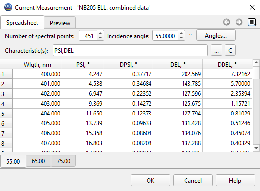

Measurement Editor
The Measurements window is used to enter and edit measurement data (spectrophotometric, ellipsometric, GD, and GDD measurements obtained with a white light interferometer, etc.). The window consists of two parts: the upper part is used to set key parameters related to the target data, while the lower part provides a spreadsheet for displaying and entering target data.
The upper part of the window, opened at the Spreadsheet tab, contains information fields that allow the user to specify the number of spectral points at which measurement data will be entered, the incidence angle(s) for data entry, and the type of spectral characteristic(s) for which data will be supplied.
The Preview, Psi & Delta Preview, and GD & GDD Preview tabs enable previewing of the entered measurements. Note that these tabs appear only when corresponding measurements are specified.

Measurements data files may have multiple data pages, with each page corresponding to one angle of incidence. The currently displayed page is characterized by the value printed in the Incident angle field. You can switch between different pages (angles of incidence) by selecting the necessary tabs at the bottom of the spreadsheet. Different pages can be modified independently (for example, you can use different sets of spectral characteristics and/or wavelengths for different angles of incidence).
To add or remove Measurements Data pages, press the Angles… button (refer to Modifying Angles for more details).
Set the number of wavelengths at which you want to enter measurements in the The number of spectral points field.
You can set measured characteristics by typing their abbreviations in the Characteristic(s) field. The list of available characteristics can be obtained by pressing the button to the right of this field (see Measured Data Selection).
The abbreviations are as follows:
Reflectance: RS, RP, and RA (for S-, P-, and Average polarizations);
Back Reflectance: BRS, BRP, and BRA (for S-, P-, and Average polarizations);
Transmittance: TS, TP, and TA (for S-, P-, and Average polarizations);
PSI and DEL for the ellipsometric angles;
Group delay and group delay dispersion on reflection: GDRS, GDRP, GDDRS, GDDRP;
Group delay and group delay dispersion on transmission: GDTS, GDTP, GDDTS, GDDTP.
It is possible to enter a set of these characteristics separated by spaces or commas.
When you add characteristics, the corresponding columns are immediately added to the spreadsheet. For each characteristic, there are two columns in the listbox:
measurement values;
measurement tolerance values.